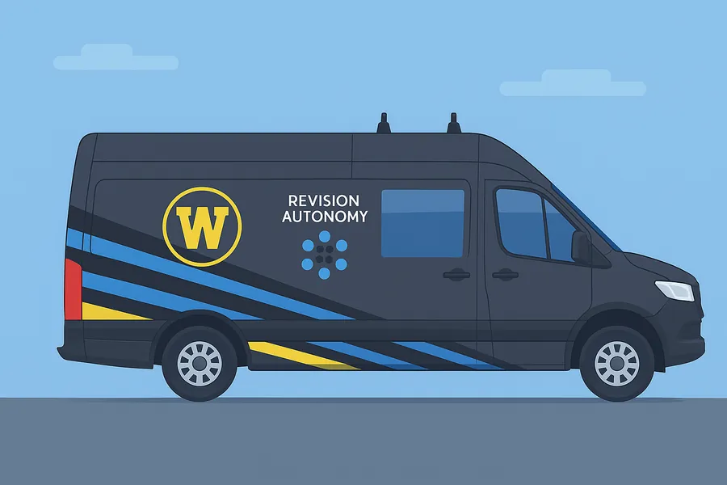
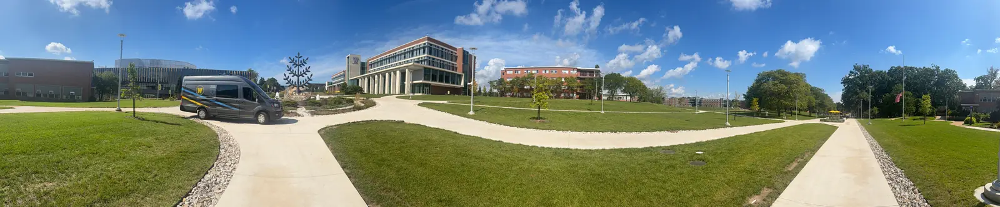
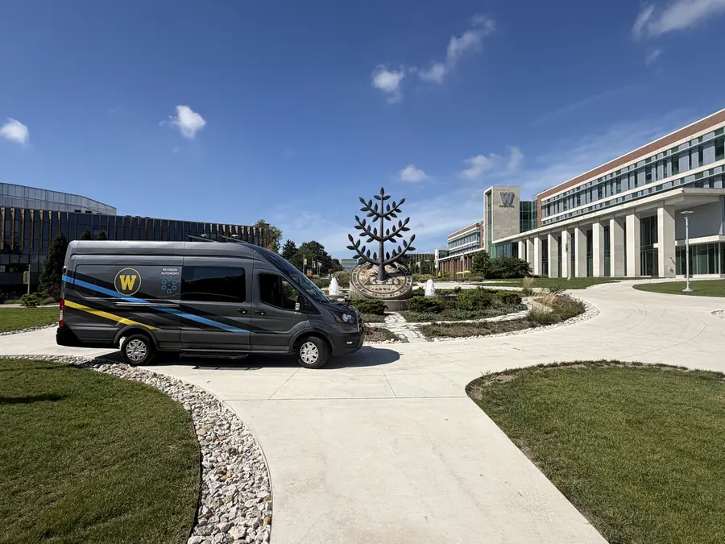

Capstone Portfolio · Master of Public Administration
Access by Design
Building public systems that anticipate disability — instead of making people ask permission to participate.
Set this page up the way you need it
Text
Joshua BehymerWestern Michigan UniversitySchool of Public Affairs & AdministrationExpected Fall 2026
The argument
Access is infrastructure, not an exception.
It is not a benefit granted to individuals through petition and review. It is a property of systems — arising from how policies, budgets, facilities, and communication are designed in the first place.
The administrator's job is not primarily to grant exceptions well. It is to reduce the number of exceptions the system requires. Every artifact in this portfolio, from a village budget in Berrien Springs to a shuttle route on a hilly campus in Kalamazoo, is an application of that idea.
Why this is everyone's problem
The curb cut effect
Curb cuts were mandated for wheelchair users. Look at who actually uses them.
This is the strongest practical argument for designing access in rather than bolting it on: accommodations built for a specific group reliably turn out to serve a much larger one. The narrow case pays for the broad benefit. An administrator who can only justify access on equity grounds is leaving most of the argument on the table.
Curb cuts
→
StrollersRolling luggageDelivery cartsBicyclesWalkersAnyone on ice
Full handsMoversParents with kidsInfection control
Plain-language documents
→
Screen reader usersAnyone in a hurryAnyone under stressNew employeesElected officials
BroncoNav
→
Students with mobility disabilitiesAnyone who needs a ride in inclement weatherAny DSS-registered student, no questions askedCloser to campus than city busing
On-demand scheduling
→
Students with disabilitiesFacultyNow accounts for 80%+ of DSS appointmentsBuilt for one group, adopted by the whole office
Kalamazoo's accessibility legacy
A local idea with a global impact
The curb cut effect has a special connection to Kalamazoo. In 1945,
the City of Kalamazoo installed what are widely recognized as the
first modern curb cuts in the United States. The project was designed
to improve mobility for wheelchair users, including injured World War II
veterans returning to their communities.
1945Kalamazoo
The city installs the first modern curb cuts in the U.S., with returning World War II veterans in mind.
1968Federal
The Architectural Barriers Act requires federally funded buildings to be accessible.
1973Federal
Section 504 of the Rehabilitation Act bars disability discrimination in federally funded programs, universities included.
1990Federal
The Americans with Disabilities Act makes access a civil right across public life.
2024Federal
A Justice Department rule sets web accessibility standards for state and local governments, public universities included.
2026Kalamazoo · WMU
BroncoNav moves to its own ride-request platform, bronconav.com.
At the time, a curb was a significant barrier. Today, curb cuts are so
common that they can be easy to overlook, but they represent a major
shift in how communities think about access. A change created for
disabled residents became infrastructure that benefits parents with
strollers, travelers with luggage, delivery workers, and anyone
navigating the built environment.
Kalamazoo's history demonstrates a central principle of accessibility:
designing for people who experience barriers often creates better
systems for everyone.
I found this in my own budgeting coursework, in a course that had nothing to do with disability. A village had posted its budget as a scanned image — unsearchable, and unreadable to a screen reader. Fixing that would have served every resident who has ever tried to find a single number in a hundred-page PDF.
Where this comes from
Ten years at the point where people meet systems
In snowy seasons, the sidewalks on WMU's campus tell you who the campus was built for. Snow gets pushed off the main walkways and piled into the curb cuts. A student who could manage a route in the fall finds that the same route after a snowfall is not a route at all. Nothing about that student changed. The environment did.
I spent nearly a decade in supported employment, helping adults with disabilities find community jobs and then keep them — the harder half of the work. When a placement failed, it was rarely because the person couldn't do the job. It was because one of the surrounding systems had no give in it.
Today I serve as a Deaf and Hard of Hearing Accommodation Specialist in Disability Services for Students at Western Michigan University, where I coordinate communication access, supervise more than 20 staff across three areas (ASL interpreters, Sighted Aides, and BroncoNav Drivers), manage program funds, and lead BroncoNav, the accessible shuttle program I helped create.

Flagship project
BroncoNav
WMU's accessible campus shuttle, which I helped create with Dr. Zach Asher's Energy Efficient and Autonomous Vehicle Lab and Revision Autonomy. It now runs on its own ride-request platform, bronconav.com.
Interpreting, captioning, and classroom design for Deaf and hard of hearing students — treating access as a design question rather than a service request.
Next
Disability policy analysis
Moving from managing the consequences of structural conditions to working on the conditions themselves, in a governmental or nonprofit setting.

The walkable core. Great for anyone on foot, and a longer trip to the nearest vehicle for anyone who can't make that walk.
Flagship project
From a shuttle to a system
WMU's campus plan moved vehicles to the edges and gave the center to pedestrians. That works for most students. For a student with a mobility disability, it turned the distance between parking, transit, and class into a barrier. BroncoNav is the structural response: an accessible, on-demand shuttle I helped create with Dr. Zach Asher's team at WMU's Energy Efficient and Autonomous Vehicle Lab and run out of Disability Services for Students. The van itself was a gift from the lab, and the service completed more than 1,500 rides in its first full semester.
Running it on Microsoft Bookings showed me exactly where an off-the-shelf tool stops fitting a public service. So BroncoNav now runs on its own platform, bronconav.com, which I worked closely with a development team to build from the ground up. Students sign in with their WMU account, request one-time or recurring rides with at least an hour's notice, choose from 18 campus pickup and drop-off points, and track the rides they've requested.
Recurring rides are the thesis in miniature. A student with a fixed class schedule asks once for the semester instead of once for every ride. Each request a system no longer requires is a burden it no longer imposes.
INSERT: Your role in the build, in two or three sentences. What requirements did you define, which design decisions did you drive, and how did you test it with staff and riders?
INSERT: Credit for the development team, in the words you'd like to use.
Launched
September 21, 2026
Replaced
Microsoft Bookings
Who can ride
Registered DSS students, signed in with a WMU account
Ride requests need a registered DSS account, so reviewers will see the public landing page. The FAQ is open to everyone.

BroncoNav outside Sangren Hall, at the center of campus.
Built to keep improving
BroncoNav is not a finished product. It keeps changing to ask less of the people who ride it.
First full semester1,500+rides completed, the clearest sign the service was needed.
Easier to reachDedicated phone lineRiders can reach BroncoNav directly by phone.
Easier to bookbronconav.comBuilt from the ground up to replace Microsoft Bookings, with recurring rides so a student books once for the semester. More than 50 riders registered in its first month.
Conceptual review
Three ideas that changed how I practice
The scholarship below reframed access from something I delivered one student at a time into something produced — or prevented — by design.
Equity
Who gets counted
Frederickson's social equity pillar gives an administrator standing to argue that a service used by three percent of students is not therefore worth three percent of the attention. Efficiency-oriented decision rules reliably underweight minority needs.
Design
Burden is a choice
Oliver's social model locates disability in the environment rather than the body. Moynihan's administrative burden explains the cost: every exception a system grants first requires a citizen to prove they deserve one.
Governance
Access erodes quietly
Balfour and Adams on administrative evil, Headley and Wright on fragmented accountability. Access rarely disappears through a hostile decision — it disappears through a budget line not renewed and a responsibility with no owner.
Analytical design
The competency matrix
Twenty artifacts mapped to the five NASPAA domains. Each was selected to demonstrate a specific, identifiable element of its domain — not merely to relate to it topically. Select a domain to see its evidence.
Portfolio status0 artifacts complete0 in progress through Fall 2026
ProposalSeptember 26 · Submitted
Progress portfolioOctober 24 · Next
Final portfolioNovember 21
Integration
The domains are separable on paper only
BroncoNav makes the point efficiently. The service required leadership to convene units that did not report to one another, policy work to set eligibility and service standards, analysis to define what it would measure, a public service perspective to justify investing in something most students would never use, and communication to make the case to a funder, to faculty, and to riders. Remove any one and the program does not exist. Building bronconav.com repeated the lesson at a smaller scale: every service rule had to be defended to a development team, written into the system, and then made clear enough for a student to use without asking anyone.
What each competency domain contributed to BroncoNav. Each item links to that domain's evidence in the competency matrix.
What I did not anticipate is how much the competencies would correct one another. My earliest instinct was advocacy — argue harder, escalate better, win more individual cases. Analytical training complicated that instinct productively. Ethics coursework complicated it in the opposite direction, by showing that rigorous analysis inside an institution with distorted priorities can rationalize nearly anything. Budgeting supplied the constraint neither can: good intentions with no funding mechanism are a well-documented preference.
The most significant change was a change in unit of analysis. I entered thinking in terms of students, and I still do — the individual case is where harm shows up. But I now read individual outcomes as measurements of system performance. A student who can't get to class after a snowfall is data about snow removal, transit scheduling, and capital planning. That shift is the difference between the practitioner I was and the administrator I'm becoming.
Professional preparation
What I intend to do with this
My purpose is to help public institutions design for access rather than react to it — to reduce the number of exceptions a system requires by building systems that need fewer of them. Near term, that means a policy analyst role in disability policy. Longer term, it means working on Michigan's accessibility standards, funding, and governance at the level where conditions are actually set.
Where I'm strongest: translation. I've spent my career moving between people who use different languages — engineers and student services staff, clinicians and administrators, funders and practitioners — finding the framing that lets each side recognize its own priorities in the other's proposal.
Where I'm still building: my analytic judgment lags my analytic technique. I can execute the standard methods; my sense of research design, data scale, and measurement validity has more room to grow. That's the competency that determines whether my arguments persuade people who don't already share my commitments.
Dignity
These systems ask people to disclose private medical information and justify their needs to strangers. Some of that is unavoidable. The amount of it is a design choice.
Stewardship
Access programs are small and first on the list when budgets tighten. Managing funds well is partly fiduciary obligation and partly survival strategy.
Accountability
Access erodes through diffusion — responsibilities that belong to everyone and therefore to no one. Decisions need identifiable owners.
Experience
Practice before theory
Ten years of direct service is what produced the structural analysis. The coursework gave me language for what I had already been watching.
Disability Services for Students · Western Michigan University · Kalamazoo, MI
Supervises 20+ staff across three areas (ASL interpreters, Sighted Aides, and BroncoNav Drivers) and coordinates CART providers and vendor partners. Helped create and now manages BroncoNav, WMU's accessible campus shuttle, from concept through 1,500+ rides in its first full semester, and worked with a development team to build bronconav.com, the ride-request platform that replaced Microsoft Bookings in September 2026. Online scheduling initiative now accounts for over 80% of DSS appointments. Coordinates BSBP program elements including the Summer II Transition Program.
November 2021 – June 2024
Employment Services & Transitions Coordinator
OnPoint (formerly ACCMHS) · Allegan, MI
Managed vocational rehabilitation caseloads for individuals with disabilities and mental illness. Directed the Youth Transitions program, conducting community outreach and writing Individual Plans of Service through Person-Centered Planning. Served as Allegan County's community liaison with Michigan Rehabilitation Services (MRS).
May 2017 – November 2021
Employment Training Specialist II
MRC Industries · Kalamazoo, MI
Led CARF accreditation audit preparation. Established and maintained partnerships with 40+ employers across Southwest Michigan, placing hundreds of consumers with disabilities into employment. Built department-wide data-tracking in Salesforce and served as organizational trainer on Individual Placement & Supports (IPS) standards. Maintained direct working relationship with MRS, CMH, and BSBP.
Graduating December 2026
Master of Public Administration
School of Public Affairs & Administration · Western Michigan University
NASPAA-accredited. Coursework in public policy, applied research methods, quantitative data analysis, public budgeting and accounting, grant writing, ethics, leadership, and nonprofit management. Advisor: Dr. Daniela Schroeter.
Western Michigan University
Bachelor’s Degree — University Studies
Concentration in Health & Human Services
Reflection
How a public institution treats the people it was not designed for is the most honest available measure of whether it is serving the public at all.
I'd like to help build institutions that pass that test — where a student in a snowy season finds the sidewalk cleared and the curb cut open, and never has to know that someone decided in advance that they would be coming.
Contact
Get in touch
I'm finishing the MPA in Fall 2026 and looking toward policy analysis work in disability policy. If you're working on access at the level where conditions get set, I'd like to hear about it.
An accessibility portfolio should meet its own standard. Here is the one this site aims for, and how to tell me when it misses.
Standard
Written to meet WCAG 2.2 Level AA. Text colors are checked against the contrast minimums in the light, dark, and high-contrast themes.
Display settings
Text size, theme, contrast, motion, spacing, typeface, link underlines, a reading ruler, plain-language summaries, and visible image descriptions. Your choices are saved only in this browser.
Built with
Native HTML buttons and links, so keyboards and screen readers get the behavior they expect. Papers open as text rather than embedded PDFs, so they reflow on a phone.
Tested with
NVDA and JAWS on Windows, VoiceOver on Mac and iPhone, TalkBack on Android, keyboard-only navigation, and browser zoom up to 200%.
Found a barrier?
Email joshua.b.behymer@wmich.edu with what happened and what you were using. I'll reply and work on a fix.
Last reviewed
September 2026
Display settings
These change how this page looks for you. Your choices are saved on this device.
Text sizeScales every word on the page
ThemeAuto follows your device
High contrastStronger text and border contrast
Reduce motionStops animation and scroll effects
More text spacingWider lines, letters, and words
Plain typefaceDrops the display serif for a plain sans
Underline linksMarks links without relying on colour
Plain-language summariesAdds a short, simple summary to each section
Show image descriptionsShows the text a screen reader hears for each photo